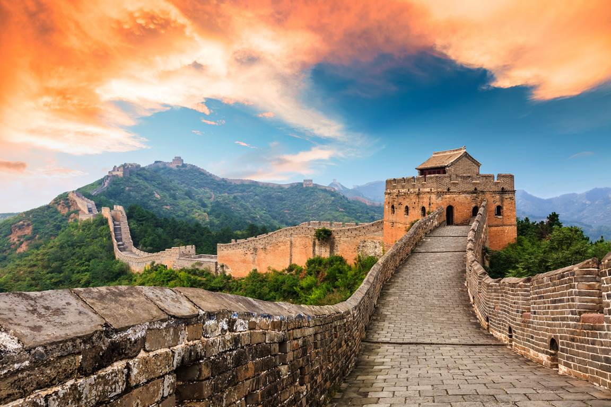

1. Gran Muralla, China

Esta fortificación de 212 mil km, de la que se conserva aproximadamente 1/3, es la construcción en su tipo más grande del mundo y uno de los iconos turísticos de China.
La obra unía la frontera chino-coreana con el desierto de Gobi y fue construida como protección contra pueblos chinos hostiles y enemigos extranjeros, entre los siglos V a.C. y XVI.
Su altura es de entre 6 y 7 metros y su ancho máximo es de 5 metros, por lo que no se puede ver desde la Luna, menos desde Marte.
Para su construcción se emplearon los materiales que había a mano a lo largo del extenso recorrido. Tiene sectores de piedra caliza, grava triturada, ladrillos cocidos y granito.
2. Templo Expiatorio de la Sagrada Familia, Barcelona, España

La obra cumbre del arquitecto español del siglo XIX, Antoni Gaudí, gran maestro del modernismo, es una de la catedrales más fotografiadas del mundo.
El artista catalán comenzó la monumental iglesia en 1882 y pese a pasar más de 130 años, el templo más visitado de Europa después de la Basílica de San Pedro de Roma, aún está inconcluso.
La catedral es compendio artístico de sus experiencias de obras que realizó en Barcelona, entre las que destaca el Parque Güell.
El templo consta de 5 naves centrales y 3 fachadas dedicadas al Nacimiento, la Pasión y Muerte y la Resurrección de Jesús. Cuando haya sido terminada tendrá 18 torres, una para cada apóstol, 4 para los evangelistas, una para la Virgen y una para Jesús.
3. Torre Eiffel, París, Francia

La torre más famosa del mundo tiene una altura arquitectónica de 300 metros, elevándose a 324 metros al incluir su antena. Tiene 3 plantas situadas respectivamente a 57.6, 115.7 y 276.1 metros de la base, las que puedes alcanzar subiendo sus más de 1600 escalones o en ascensores.
La estructura fue erigida para la Exposición Universal de 1889 y calificada por la comunidad artística francesa como una monstruosidad de hierro, sin sospechar que se convertiría en el monumento con entrada paga más visitado del mundo.
Por las noches se ilumina con miles de bombillas y flashes, para ser también el emblema nocturno de París.
4. Machu Picchu, Cusco, Peru

El Santuario Histórico de Machu Picchu es el destino turístico más visitado de Perú y de América. Es una antigua ciudad inca que está ubicado en el corazón de los andes peruanos. Fue construido en el siglo XV, durante la época inca. Se cree que esta ciudad sagrada fue un importante lugar de culto religioso y de descanso durante el reinado del Inca Pachacuteq.
5. Monte Fuji, Japón

El principal símbolo geográfico japonés visible desde Tokio con tiempo despejado. Sus 3.776 metros sobre el nivel del mar le convierten en la máxima cima de Japón, lugar sagrado y centro de entretenimiento.
Es un volcán considerado activo pero de bajo riesgo eruptivo. Su última actividad se registró en 1707.
A lo largo del camino hay estaciones con refugios, templos budistas y otras atracciones.
La subida al Fuji es relativamente cómoda ya que los senderos tienen poca pendiente. Una carretera llega hasta los 2300 m.s.n.m. en la quinta estación y hay 4 rutas de ascenso. Es usual subir por una ruta y bajar por otra para conocer más la montaña y admirar el paisaje.
6. Chichén Itzá, Yucatán, México

Ciudad arqueológica en el municipio yucateco de Tinum que fue la máxima realización urbanística de los mayas en México. La mayoría de sus edificaciones fue erigida durante el período clásico tardío (800-1100 d. C.).
Chichén Itzá fue incluida en 2007 entre las Nuevas Siete Maravillas del Mundo Moderno y es Patrimonio de la Humanidad desde 1988.
La arquitectura del conjunto tiene una evidente influencia tolteca y la principal deidad homenajeada, Kukulkán, es claramente una representación de Quetzalcóatl, dios fundamental de la cultura que se desarrolló en el altiplano mexicano.
7. El salar de Uyuni, Bolivia

El salar de Uyuni es el mayor desierto de sal continuo y alto del mundo, con una superficie de 10 582 km². Está situado a unos 3650 msnm en el suroeste de Bolivia, en la provincia de Daniel Campos, en el departamento de Potosí, dentro de la región altiplánica de la cordillera de los Andes.
Esto hace que esta sábana blanca sin fin que es el Salar de Uyuni se llegue a confundir con el cielo en el lejano horizonte. El salar refleja las nubes, cuando está ligeramente cubierto de agua. Especialmente entre los meses de enero y marzo, en la época de lluvias.
|